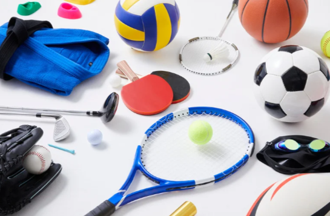

Loisirs, Culture & Détente
"Le jeu est le travail de l'enfant." - Maria Montessori
Le réseau de bibliothèques de la Communauté de communes Berry Loire Puisaye vous accueille dans 9 communes du territoire. Empruntez livres, revues et CD gratuitement, participez à des animations et profitez de l'espace numérique Loirétek.
Beaulieu-sur-Loire
Mer, sam de 10h00 à 12h00
10 place de l'Église
45630 Beaulieu-sur-Loire
Bonny-sur-Loire
Mar 16h-18h, mer et sam 10h-12h hors périodes scolaires
rue de Bicêtre
45420 Bonny-sur-Loire
Briare
Mar 16h-18h, mer 14h30-17h, ven 9h-11h et sam 14h30-16h30
Square Pierre Armand Thiébaut
45250 Briare
Châtillon-sur-Loire
Lun 16h-18h, mer 14h30-17h30, jeu 10h-11h30 et sam 10h-12h
Rue du Cormier
45360 Châtillon-sur-Loire
Dammarie-en-Puisaye
Sam de 10h30 à 12h00
3 rue de la Mairie
45420 Dammarie-en-Puisaye
Ousson-sur-Loire
Mar et 1er ven de 15h30 à 17h00
7 rue du 14 juillet
45250 Ousson-sur-Loire
Médiathèque Départementale du Loiret - Loirétek
Accédez 7j/7, gratuitement et légalement, à une offre de contenus en ligne : musique, cinéma, livres, presse, savoirs, jeunesse... Une seule condition : être inscrit dans une bibliothèque du réseau.
www.loiretek.frDeux fois par an, la Communauté de communes Berry Loire Puisaye édite un programme des animations culturelles et spectacles de notre territoire. Feuilletez le livret directement ci-dessous ou consultez-le en plein écran.
Si le lecteur ne s'affiche pas, vous pouvez ouvrir le livret directement sur Calameo.
Ce livret recense l'ensemble des spectacles, concerts, expositions et animations proposés sur les communes du territoire pour la saison en cours.

Le territoire Berry Loire Puisaye compte de nombreuses associations sportives, culturelles et de loisirs. Pour découvrir celles présentes dans votre commune, contactez directement votre mairie.
Les mairies disposent de la liste complète des associations locales, de leurs coordonnées et de leurs activités. N'hésitez pas à les solliciter pour vous orienter vers la structure qui correspond à vos envies ou à celles de vos enfants.
Plusieurs espaces de jeu et ludothèques vous accueillent sur le territoire : la bibliothèque de Bonny-sur-Loire, l'association Jeux D Boule à Châtillon-sur-Loire, et la Ludomobile itinérante.

Bibliothèque de Bonny-sur-Loire
Le 3ème vendredi de chaque mois à partir de 20h00, soirée jeux de société à la bibliothèque ou au Mille Clubs.
Contact Maison de Pays
📞 02 38 31 57 71

Jeux D Boule (Châtillon-sur-Loire)
Un samedi par mois pour les familles de 14h30 à 18h et le vendredi soir de 20h à minuit avant les vacances pour une soirée entre adultes.
7 rue Gelée, 45360 Châtillon-sur-Loire

Ludomobile
Ludothèque itinérante sur la Communauté de communes avec jeux de société et jeux géants. Fréquence : 2 fois par mois.

La Micro-Folie est un musée numérique gratuit et accessible à tous. Sur écran géant ou tablette, partez à la découverte de milliers d'œuvres du monde entier.
Pilotée par la Communauté de communes Berry Loire Puisaye et la ville de Briare, la Micro-Folie propose ateliers, conférences, expositions et animations. Accompagné par un médiateur culturel, voyagez depuis Briare vers d'autres horizons, casque de réalité virtuelle sur la tête ou tablette en main.
Horaires d'ouverture :
- Mercredi de 9h45 à 11h45 et de 13h45 à 17h45
- Jeudi de 13h45 à 17h45
- Vendredi de 13h45 à 17h45
- Samedi de 9h45 à 11h45 et de 13h45 à 17h45
- Le premier dimanche de chaque mois de 13h45 à 17h45
📍 Château de Trousse-Barrière - 45250 Briare
📞 02 38 31 20 08
L'Office de Tourisme Terre de Loire et Canaux est une mine d'informations pour retrouver l'ensemble des animations par thématique ou par date. Une liste de diffusion existe sur son site et les réseaux sociaux.


Application Baludik : Baludik est une application mobile gratuite de jeux de piste / balades interactives. Elle permet de découvrir le territoire en s'amusant, à travers des énigmes, des indices, des étapes à trouver et des défis à relever.
À Briare, le jeu proposé s'intitule Le Médaillon de Bapterosses !
Infos pratiques pour en profiter :
- Point de départ : Office de Tourisme de Briare, 1 Place Charles de Gaulle.
- Durée estimée : environ 1h30.
- Distance / difficulté : ~ 3 km, adapté pour enfants.
- Coût : Gratuit.
- Langue / accessibilité : version française. Niveau de compréhension adapté selon les âges.
Disponible gratuitement sur Google Play et App Store
📍 1 Place Charles de Gaulle - 45250 Briare
📞 02 38 31 24 51
🌐 www.terresdeloireetcanaux.com
Deux lieux incontournables pour découvrir le patrimoine et le terroir local en famille : la Maison de Pays de Bonny-sur-Loire et la Maison du Terroir de Beaulieu-sur-Loire.

Maison de Pays de Bonny
Ce qu'on aime pour les enfants :
- Escape Game urbain "Marchez, Roulez, Découvrez" : un jeu de piste grandeur nature. Parcours adaptés aux enfants (dès 4-7 ans) et pour les adultes.
- Heure du conte : pour les petits (3-7 ans), à la Bibliothèque, et tous les 3ème vendredis de chaque mois, soirée jeux de société à partir de 20h.
- Bourse aux jouets : un événement festif durant la période de Noël.
- Animations artistiques : ateliers de modelage d'argile, dessins animaliers, ateliers créatifs ponctuels.
Horaires : Mar-Ven 9h-12h / 14h-18h ; Sam 15h-18h. Gratuit. Accessible PMR.
📍 29 Grande Rue - 45420 Bonny-sur-Loire
📞 02 38 31 57 71
📧 maisondepays@bonnysurloire.fr
🌐 www.bonny-sur-loire.fr

Maison du Terroir et d'Animations de Beaulieu-sur-Loire
Ce qu'on aime pour les enfants :
- Ateliers ludiques et pédagogiques par tranches d'âge : 4-6 ans, 7-9 ans, 10-12 ans, +12 ans.
- Animations saisonnières : "Animation de l'été" en lien avec les produits locaux et savoir-faire des producteurs.
- Découvertes autour de l'alimentation : ateliers pour comprendre d'où viennent les produits transformés.
- Jardin des 5 Sens (parc de la Maison Marret) : gratuit, verger, labyrinthe végétal.
- L'aventure en famille avec l'Office de tourisme "le Secret de Nettir".
Horaires haute saison : Mer-Sam 9h-12h30 / 14h30-17h45
Hors haute saison : Mer et Ven 9h-12h30 / 14h30-17h
Accessible PMR. Visites individuelles libres en permanence.
📍 3 place d'Armes - 45630 Beaulieu-sur-Loire
📞 06 73 36 06 60
📧 maison-du-terroir@beaulieu-sur-loire.fr
Espaces de jeux et de détente dans les communes du territoire. Retrouvez ci-dessous les squares et aires de jeux disponibles.

Adon
Aire de jeux, Etang communal d'Adon

Autry-le-Châtel
Aire de Jeux 9, rue des Vallées

Beaulieu-sur-Loire
Espace jeux Parc Marret, place du 11 novembre
Espace jeux du Canal, D926

Bonny-sur-Loire
chemin de la Cheuille (3-15 ans)

Briare
Square de la Mairie, 3 route d'Ouzouer
Square Frédéric Bapterosse, 6 bd Loreau
Jardin du Baraban, 22 rue des Grandes Allées
Jardin des Vignes, rue du Pont des Vignes
Aire du port aux pierres
Parc de Troussebois, D 952 – rond-point nord

Châtillon-sur-Loire
Square du Port, rue de la Passerelle (3-12 ans)
Square, rue du Stade (3-6 ans)
Square, rue de la Source (3-6 ans)
Square, rue du Glacis (3-8 ans)

Dammarie-en-Puisaye
Aire de jeux, chemin de la Garenne

La Bussière
Aire pour enfants des Choux, rue de Dampierre

Ousson-sur-Loire
Square Solange Pillard, rue de la Loire

Ouzouër-sur-Trézée
Square du Canal, rue Saint Roch

Saint-Firmin-sur-Loire
Aire de pique-nique et de jeu, 32 Grande Rue
Équipements sportifs de plein air répartis sur le territoire : city-stades et skate-parks accessibles à tous.

Bonny-sur-Loire
City-stade, 8 rue de la Gare

Briare
Complexe sportif, rue des Sports - 45250 Briare

Briare
Skatepark, allée du Paradis

Châtillon-sur-Loire
Complexe sportif, rue des Sports - 45360 Châtillon-sur-Loire

Ouzouër-sur-Trézée
City-stade, rue du Stade